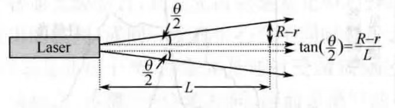

光束的方向性用平面发散角\(\theta\)评价，平面发散角的含义如下图所示：

\(\theta\)角越小，光束发散越小，方向性越好.
\(\theta\)角趋于0时，可以近似称为“平行光”.
激光束的发散角主要由激光器受激辐射的机理和光学谐振腔对输出光束方向的限制所决定。
激光束所能达到的最小光束发散角不能小于激光通过输出孔径的衍射极限。光腔的输出孔径为\(D\)时，衍射极限角度为：
$$\theta_m\approx \lambda/D$$理想平面波是完全空间相干光，其发散角为0.
将光波场的空间分布分解为沿传播方向（腔轴方向）的分布\(E(z)\)与在垂直于传播方向的横截面上的分布\(E(x,y)\).
光腔模式用TEM\(_{mn}\)标志不同横模的光场分布.
光和物质相互作用产生激光的过程。
激光技术：光和物质相互作用光特性变化的过程。
| 光电效应——光的粒子性 | 光具有波粒二象性 |
| 电子衍射——光的波动性 |
对于中心波长为\(\lambda\)（中心频率为\(\nu\)）的激光器，发出谱线的线宽为\(\Delta\lambda\)（或\(\Delta\nu\)）
虽然说\(\lambda\)反比于\(\nu\)，但这并不影响\(\Delta \nu\)小时\(\Delta \lambda\)也小.
从数学角度来看：
$$\lambda = \frac{v}{\nu}$$ $$\mathrm{d}\lambda = -\frac{v}{\nu^2}\mathrm{d}\nu$$所以说\(\Delta \lambda\)是正比于\(\Delta \nu\)的.
不同时刻、不同空间点上两个光波场的相关程度。
不同空间点上、不同时刻的光波场某些特性的相关性
| 相干性 | 空间相干性：描述垂直于光束传播方向上各点的相位关系。 |
| 时间相干性：描述光束传播方向上各点的相位关系。 |
| 相干体积\(V_c\) | 光波场都具有明显相干性的空间体积。 | $$V_c = A_c L_c = A_c \tau_c c$$ |
| 相干面积\(A_c\) | 垂直于光传播方向的截面。 | |
| 相干长度\(L_c\) | 沿光的传播方向。 | $$L = \lambda^2/\Delta\lambda$$ |
| 相干时间\(\tau_c\) | 光沿传播方向通过相干长度\(L_c\)所需的时间。 |
用于表示激光器的横向光场分布。
相格空间体积以及一个光波模或光子态占有的空间体积都等于相干体积。
属于同一状态的光子或同一模式的光波是相干的，不同状态的光子或不同模式的光波是不相干的。
单位截面积单位立体角内包络的光功率，用于表征光源定向发光能力强弱。
$$B = \frac{\Delta P}{\Delta S\Delta \Omega}$$